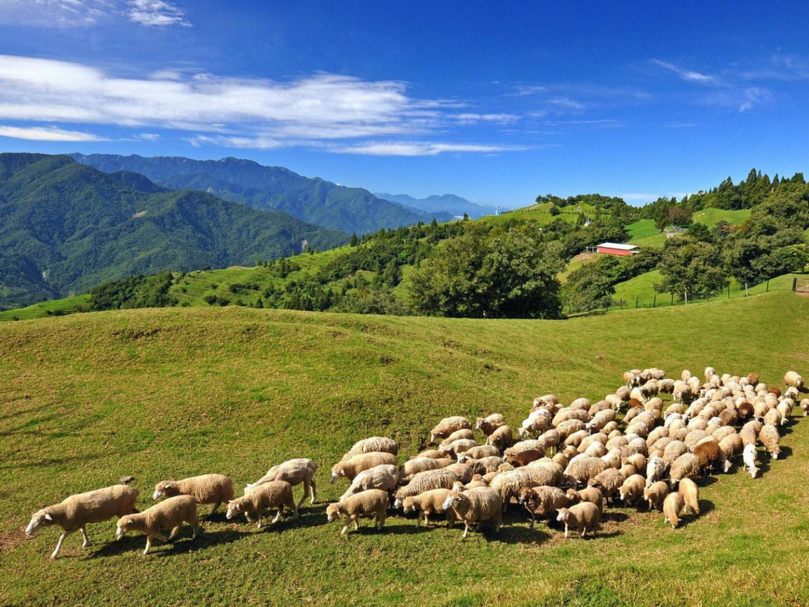
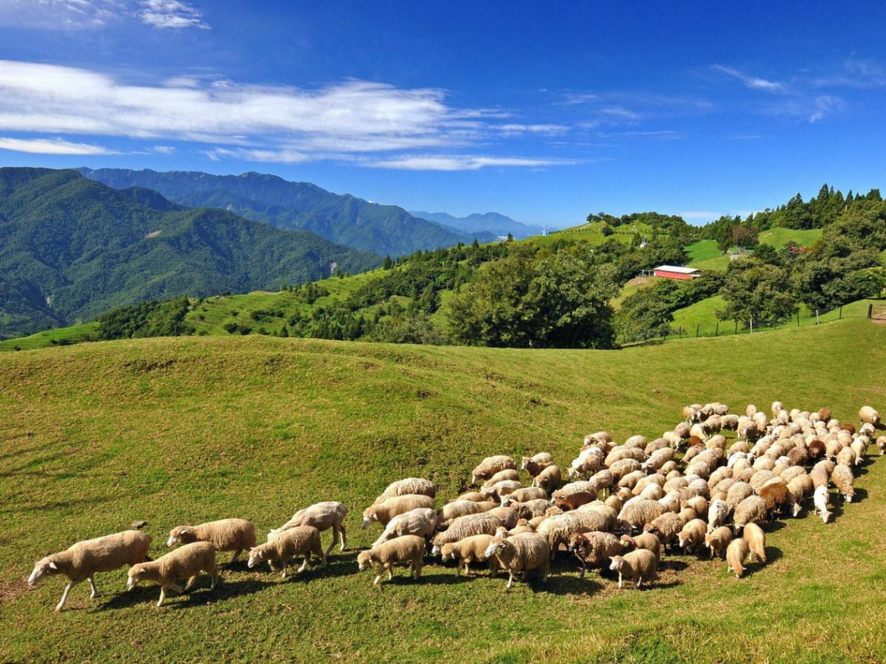

景點介紹
清境農場在南投縣境內，成立於民國50年（西元1961年）2月20日，是行政院退除役官兵輔導委員會為了安置早年投效疆場的國軍退除役官兵在此從事農墾開發而設置的。清境農場是中橫公路霧社支線往合歡山必經之地。民國54年（西元1965年），當時的行政院長蔣經國先生，感於此處「清新空氣任君取，境地幽雅是仙居」，於是將原名「見晴農場」改為「清境農場」。由於清境農場遠離城市酷熱，清新、自然與靜謐，溫和的氣候加上豐沛的雨量，使得此地成為經營牧場、種植溫帶蔬果與花卉的好地方。
清境農場在南投縣境內，成立於民國50年（西元1961年）2月20日，是行政院退除役官兵輔導委員會為了安置早年投效疆場的國軍退除役官兵在此從事農墾開發而設置的。清境農場是中橫公路霧社支線往合歡山必經之地。民國54年（西元1965年），當時的行政院長蔣經國先生，感於此處「清新空氣任君取，境地幽雅是仙居」，於是將原名「見晴農場」改為「清境農場」。由於清境農場遠離城市酷熱，清新、自然與靜謐，溫和的氣候加上豐沛的雨量，使得此地成為經營牧場、種植溫帶蔬果與花卉的好地方。
